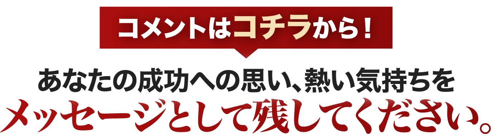

①あなたにメールが届いている確認のため藤井百七郎からのメールに、「確認しました」と返信してください。※迷惑メールフォルダも必ずチェックください。
①あなたにメールが届いている確認のため藤井百七郎からのメールに、「確認しました」と返信してください。※迷惑メールフォルダも必ずチェックください。
メールでしかお届けできない、最重要な情報もこれからどんどん公開予定です。なので必ずメールが正しく届いているかご確認ください。
メールが確認できない方は、こちらのフォームから「メールが届いていません」とご連絡ください。
②必ずこのページをお気に入り（ブックマーク）に登録してください。
 藤井百七郎です。
藤井百七郎です。
これからあなたにお届けするのは、
3年で「確実に」FIREを目指すための、
とっておきの方法。
それが、
「藤井流・3年FIRE投資塾」
というもの。
ここで1つ、
あなたに考えていただきたいことが
あります。
あなたがいまこの瞬間に、
1億円の資産を築き、
毎月100万円、200万円の安定収入が、
確保されていたとしたら・・・
どんな人生を過ごしたいと思いますか？
仕事を辞めて、
毎日のんびり過ごすのもいいでしょう。
あるいは海外に移住し、
ハワイとか、プーケットとか、
南の島でゆったりするのもいい。

もちろんお金の心配なく、
仕事に打ち込むのもいいと思います。
理想の過ごし方は人それぞれですし、
あなたは誰にも遠慮せず、
自分が心の底から「やりたい！」
と思うことを自由にできる。
あなたにはこれから、
FIREという世界を実現していただき、
お金の不安、心配から解放された、
本当の意味で自由な人生を、
手にして欲しいのです。
その方法は私が、
この藤井流「3年FIRE」投資塾で
お伝えします。
億り人になるため、FIREを実現するために、
難しいことをする必要はないんです。
あなたが投資の、
まったくの初心者であってもOK。
週末の30分を使って、
いまのお給料・収入をキープしながら、
できるだけリスクを避けて、
あなたは大きな資産をこれから、
築くことになりますよ。

上記の動画でも語っていますが、
あなたには2つのステップを辿って、
億の資産を築いていただきます。
そのイメージがこちら。

1つ目のステップは、
「トレードメイン」で資金を増やすという
やり方。
今の収入・生活をキープしながらトレードを通じて、
あなたは毎年600万円とか、1000万円とか、
1200万円といった副収入を作ることになります。
いったんトレードの収入だけで、
生活できる状態になる。
これを「サイドFIRE」と言います。
そして2つ目のステップは、
トレードから投資に移行し、
「お金がお金を生み出す」
という稼ぎ方で資産を増やします。
このステージにくれば、
あとは自動操縦みたいな感覚ですよ。
3000万円 → 5000万円 → 1億円と、
一気に資産を増やすことになるでしょう。
私の教え子の井上勇太さんは、
藤井流の稼ぎ方を学んでくださり、
1ヶ月で300万円、600万円、
1300万円超えなど大きな利益を、
文字通り「日常的に」
稼ぎ出しているんですよね。

そしてこうやって、
億の資産を築き「億り人」に
なられました。


別に彼が、
特別すごい成績、資産なわけではなく、
私のやり方を素直に実践してもらえたら、
このくらいの稼ぎ方は、誰にでも目指せます。
私がこの「3年FIRE」投資塾で、
あなたも成功できることを、
完璧な形で証明してみせますよ。
大いに期待していてください。

この1つ目の動画では、
あなたの成功へのロードマップや、
藤井流「3年FIRE」投資塾で、
どのように成功へと向かっていくのかを、
詳しくお話しました。
まずはこの第1弾の動画を、
何度か繰り返しじっくりと、
見ていただければと思います。
そうすることであなたも自然と、
成功するイメージが湧いてくるでしょう。
「なるほどこうやって億を作るのか」
「無理せず、コツコツやっても
FIREできるんだ」
「これなら自分にもやれそう！」
そうやってワクワクした気持ちになったら、
もう半分成功したも同然です。
ぜひ一緒に、
FIREの世界、億り人の世界へと、
ステップアップしていきましょう。
まあこの第1弾は、
挨拶代わりという感じですね笑
本格的な内容は、
2つ目の動画でお届けしようと思っています。
遅くとも2日後には、
そちらを公開できる予定です。
それまでに下記のコメント欄から、
必ずメッセージをお書きください。
次にお伝えする内容は、
正直にいうと、
「無料で公開すべきでない」
というのが本音です。
実際に私がスクールで、
お金を頂戴して教えている内容も、
盛り込まれていますからね。
なので「本気の方」にしか、
お届けしたくありません。
あなたがどれだけ強く、
藤井流の稼ぎ方を知りたいと思ってくれているのか。
そして「絶対に資産を作りたい！」
「何がなんでもFIREしたい！」
と、熱いパッションをもっているのか。
その思いをぜひ、
コメント欄にお書きください。

コメントする 反映に時間がかかります
メイズ マントル
藤井先生、お役立講義を深謝致します‼️ 自分自身が物心両面で豊かになり、私にとって大切な人をも
幸せにしたいのです。
外為ですと、TKO／LON／NYCの時差を考慮すると、寝る時間がありません。是非とも、藤井式株式投資で、億り人になりたいです‼️
藤井 百七郎 投稿作成者
メイズさん
外為も面白い投資でありますが株のスウィングはもっと楽に
そして安全に資金を増やしていくことができます。
きっとこれまでやられてきたスキルも株式トレードに
活きてくると思います。お楽しみにしていてください(^^♪
アガタヒロミ
今お金がありません。無料が終れば先生の講義を受ける費用もありません。投資をする最初のお金もありません。少しづつでもしっかり絶対稼いで行きたいと思っています。なんとか出来ますか？
もう年ですので他に働くことも無理です。
藤井 百七郎 投稿作成者
アガタさん
トレードですのでまったくの０円では厳しいですが、
逆に大金が必要というわけでもありません。
お金がなければその分頭を使っていきましょう。
なるべくリスクを抑えて、そしてなるべく資金を
回転させれる方法を模索してまいりましょう。
加藤陽子
既にに古稀を過ぎたおばあさんです。変形性股関節症末期、左側膝関節ステージ4、右側膝関節ステージ3で人工関節手術を勧められています。ロボットになるのを避けたいと、再生医療を希望していますが、一ヶ所300万円弱です。何とか資産を増やしたいと思います。初期費用はいくらですか？そちらの利益目的は何ですか？
藤井 百七郎 投稿作成者
加藤さん
コメントありがとうございます。
トレードと投資はどんな状況下でもできます。
ぜひ希望をもって臨んでください。望むライフスタイルを手に入れていきましょう。
価格などはまた後程お伝えさせていただきますので次の動画もご覧になってください(^^♪
サンゴ
藤井先生、稼いで余裕のある生活を人生の最後に送ってみたいです。後期高齢者になったばかりです。性格は長続きしないので心配です。でも頑張りたいです。
北村
トレードから投資の順番が大事ということが勉強になりました。トレードで不自由ない利益を出せればそれで十分かも思ってましたが、確かに不労所得で不自由なく生活できればいうことでないですよね。早く負けないトレードの方法が
知りたいです。
藤井 百七郎 投稿作成者
北村さん
はい、まずはトレードで資金を増やしてそして投資へとステップアップです。
段々とゆとりが出てくる計画になっています。そしてゆとりがまた次の
利益の誘い水になります。がんばってまいりましょう(^^♪
大山桂司
退職金でローン返済し、わずかに残ったお金があります。
これを元金に動画でおっしゃっていたように、増やしていきたい。
藤井 百七郎 投稿作成者
大山さん
コメントありがとうございます。
すばらしいご計画です。しっかりとフォローさせていただきます。
がんばりましょう(^^♪
奥田史郎
勉強して稼ぎたいです
藤井 百七郎 投稿作成者
奥田さん
はい、可能です。
ごいっしょにがんばりましょう(^^♪
中島数明
本当に稼げるのなら、ぜひ試してみたい
藤井 百七郎 投稿作成者
中島さん
コメントありがとうございます。
実例もいっぱい揃っておりますのでご安心ください。
中島和子
遂に高齢者の仲間になってしまいました。主婦しかやってなかったので、雀の涙ほどの蓄えしかありません。
ただ、だからこそ藤井先生のお話を聞かせていただき、確実に、着実にお金を貯めたい、増やしたいと思いました。
メンタルはとても弱いので、藤井先生頼みです。
よろしくお願いいたします。
藤井 百七郎 投稿作成者
中島さん
スタートのポジションが小さいほど達成した時の喜びは大きくなります。
やり方もそうですがメンタル面もしっかりサポートしてまいります。
ご安心ください(^^♪
増井和彦
投資はまるっきりの初心者です。未だ勉強方法を探しております。投資情報もですが資金も皆無です。まず、勉強し、少しずつでも資金を貯めて投資をしたいと考えております。御指導を宜しくお願いします。
藤井 百七郎 投稿作成者
増井さん
最初の進捗は小さく感じますが後半からは描ける二乗くらいのペースで
資産は増えていきます。ですのでまずは資産を増やすより必要な
知識をつけていく方に集中してまいりましょう(^^♪
大川 正
株は難しい
藤井 百七郎 投稿作成者
大川さん
はい、おっしゃるとおり難しいです。
ですからやりがいがあり他の知らない人に比べて利益が取れていくのです(^^♪
大貝俊弘
本当に稼げるのなら、勉強して稼ぎたいです。
藤井 百七郎 投稿作成者
大貝さん
実際に利益を出してらっしゃる方もたくさんいらっしゃいます。ご一緒に頑張ってまいりましょう。
ヨシダ
株式投資で、可能であれば億り人になりたいです
藤井百七郎
ヨシダさん
億り人ですが、少なくとも思ってらっしゃるほど難しいものではありません。
億はあくまで通過点とお考え下さい(^^♪
栗原一人
早く稼ぐコツを教わりたいです。第２話がすごく楽しみです。
藤井百七郎
栗原さん
ありがとうございます。
どんどん核心にせまっていきますのでお楽しみにされていてください。
藤本義信
藤井先生へ
始めまして、老後を考えるころとなりました藤本申します。
人生、１００年とまでは考えておりませんが。
円安一つ取りあげても食品始め諸物価が上がっていますが年金は減少しても増える事は。
好きなワインも、いつの間にか上がってきています。
生活を考えると１ランクしたのワインを選択している自分に・・・。
億なって？？？、出来たら最高ですが。
日々の安らぎの為に私も加えて戴ければ。
有難いです。
宜しくお願い致します。
藤本義信、７７歳１１か月
藤井百七郎
藤本さん
コメントありがとうございます。
はい、おっしゃる通りですね。今の日本は収入は物価ばかり上がって苦しいですね。
恐らく国は何もしてくれないし状況を変えることはできないと思います。
自分自身で切り開いていくしかないと思います。何かもうひとつ収入を得れるものが
あればそれだけでガラリと変わります。ぜひ株式投資にご期待してください(^^♪
小松 たけし
はじめまして！コメント失礼いたします。
私は軽度の知的障害を持って要るのですが、こんな私でも始められる内容なのでしょうか？
そして、いくらかかるのか？
ここがすごく重要だと思っています。
学びたい！と強い思いがあっても、
予算的に高すぎると手が出せなくて挫折しますし！
なにより、費用を取り返せるか心配でもあります。
本気で学びたいと心から思っておりますので何卒よろしくお願いいたします。
藤井 百七郎 投稿作成者
小松さん
コメントありがとうございます。
軽度の知的障害とのことですが
・日常会話ができる
・チャート画面が見れる
これらができれば大丈夫です。
価格はまた後半にお伝えしますのでお待ちください^ ^
荒川
コメント失礼します。私は年金生活者です，給料物価上昇等の社会から離された世代です。
生活を少しでも楽にしようと株を始めました。買った株はすぐに下がり、しまったと思って売ると爆上げする、壁の向こうで誰かが見ていて意地悪をしているのではないかと 考えたくなるほどちぐはぐな結果です、資金は減少傾向です、そんな時 第一話では、
「株参加者の総意が何処にあるかを考える、」「株価の方向性を見きわめる、」 「負けないことを重要視する、」
私の悩んでいることと全く同じことを述べておりましたので正しくこれだと思いました。
第2話の内容が楽しみです。早く稼げる方法を学習したいです。
藤井 百七郎 投稿作成者
荒川さん
コメントありがとうございます。
お気持ちはよくわかります。私も昔そうでしたから笑
解決策はエントリーポイントの質を上げてイメージ通りに引っ張っていくことです。
実に気持ちいいトレードになりますよ。
今後の動画にご期待ください^ ^
赤塚剛
藤井先生のお話をきいてるだけで、わくわくしました。
株式投資は元手がいるためなかなか踏み出せなかったですが、
先生のお話を聞いてぜひ学びたいです。
具体的な手法など、早く聞きたいです。
hirohina
名古屋近郊に住んでいます。
現在はリタイアし、今年から年金をいただく身になりました。
株式投資をやってみようと考えだした、現役時代の数年前に一度、カブックスさんの体験授業に参加したことがあります。その時は参加せず、別の株の世界では有名な先生のところで２年学びました。なかなか思うような成果で得られず、一度は諦めた億トレですが、別の方のコメント欄にありました、藤井先生の「億り人ですが、少なくとも思ってらっしゃるほど難しいものではありません。」との投稿に心が引き付けられました。もう一度億トレに挑戦してみようという気持ちになりました。全４話しっかりと視聴させていただきますので、よろしくお願いいたします。
藤井 百七郎 投稿作成者
hirohinaさん
左様でございましたか。
その節はご参加いただきありがとうございました。
億って作ってみるといがいとそんなもんなんですよ。。。
そして後は継続していくだけで増やしていけますのでお楽しみにしていてください。
相場的にも今はいいチャンスかも知れません。
頑張ってまいりましょう^ ^
中嶋廉夫
まだ 株のやり方 とかが なんにもいわれてないので
サッパリ わかりません
億りびととかいいますが チャートで やるんですか ？
ナニから やるのか わかりません
藤井百七郎
中嶋さん
コメントありがとうございます。
私の場合、株のやり方などはいたってシンプルです。
というより、株のやり方というのは王道でじゅうぶんです。
大切なのは…
・そのやり方にあった銘柄を抽出すること
・あとはマーケット分析です
楽しみにされていてください(^^♪
nakata
ささやか年金になり早１０年、株を生かさないももったいないと数年前から数株ずつトレードし、何とか赤字は出さずいますが、選ぶ時に早く要領よくないものかと、拝聴させて頂き良心的、私向き考えもあり、２話以降が楽しみによろしくです。
藤井百七郎
nakataさん
赤字を出されていないだけも十分にすごいですね。
株はエントリーも大事ですがエグジットも大事です。
ルールを持つことも大事ですが、ルールに縛られるのもよくありません。
といった感じで難しいものですね。でも楽しいものでもあります。
ごいっしょにがんばりましょう(^^♪
y
貯金もほぼなく毎月ギリギリの生活をおくっています。
車が欲しくても手にできず、バイク好きですが見ているだけの人生はもう懲り懲りです。
生活に不自由なく尚且つ楽しくこれからの人生過ごせるようにしたいです。
少ないお金で億まで稼げるかはすごく心配ですが、やってみたい気持ちはあります
藤井百七郎
yさん
全ての方が恵まれた状態からスタートしたわけではありません。
マイナスの状況からはじめて跳ね返した方もたくさんいらっしゃいます。
まずは希望と期待をもって動画をご覧になってください(^^♪
有加
50歳になり、近い将来に不安を抱き始めた時、この動画を知りました。全く無知ですが
理解し、経済的不安を無くしたいです。
藤井百七郎
有加さん
コメントありがとうございます。
まだ経済のことはよくご存じないとのことですが金融リテラシーは
ないよりはあったほうが絶対的にいいです。
かといって一気に詰め込んでも無駄な努力で終わります。
そのタイミングで必要なそして我々の利益に直結するお話をお届けしますので
ごいっしょに成長してまいりましょう(^^♪
すず
私は豊かなお金持ちになりたいです！
藤井先生、ぜひお力をお貸しください！
藤井百七郎
すずさん
コメントありがとうございます。
はい、ほとんどの方が無理だと思っておりますが誰にだって
豊かにお金持ちになる権利と才能はあります。
やるべきことはすでに決まっています。
どうぞご期待ください(^^♪
ここあ
半信半疑ですが、何もせず過ごすよりはと思い始めたい
藤井百七郎
ここあさん
最初はやはりそうですよね。
でも実際にお手元に少額でも利益が入ってきたり資産が増えていくと
それが実感に変わっていきゆとりにつながり二乗のペースで結果に
つながっていきます。どうぞお大事になさってください。
イマイヨシオ
頑張って株で勝ち組に成りたい
藤井百七郎
イマイさん
はい、いろいろ投資商品がある中で株が一番やりやすいと思います。
そして株がある程度の知識や経験がついたころにはどんな商品でも
すぐにできるようになります。なぜなら日本株は世界のいろんな
情勢に注意を配りながら上手になっていくからです。
どうぞご期待ください！
前田小夜子
ketebakariyorosikuレナーデです、株歴40年もうぢかんがございません８７さあいまけてばかりよろしく。
藤井百七郎
前田さん
コメントありがとうございます。
おいくつになられていても再出発は可能です。
さほど難しいことは致しません。
お気軽にご参加ください(^^♪
タカジイ
現役生活も数年で終焉を迎え、老後に少しでもゆとりのある生活を過ごしたいと思っています。
藤井百七郎
タカジイさん
コメントありがとうございます。
私も普通でいきますと定年の年齢です(笑)
でも今は人生100年。株や投資でゆとりのある人生を作ったり
計画していくのは左程難しいことではありません。
ごいっしょにがんばってまいりましょう(^^♪
田中 克典
既に高齢者で藤井先生のお話を聞かせていただき、着実にお金を貯めたい、増やしたいと思いました。
藤井百七郎
田中さん
コメントありがとうございます。
ご高齢の方でも結果を出されたり今でも楽しみながら頑張ってらっしゃる方も
たくさんいらっしゃいます。ごいっしょに頑張りましょう(^^♪
サンゴ
後期高齢者に成ったばかりの者ですが、人生の最後に余裕のある生活を一度はしてみたい！なかなか長続きしない性格ですが、頑張りたいです。
藤井百七郎
サンゴさん
コメントありがとうございます。
長続きされたことがないとのことですが、まずは株を楽しむこと、ご興味をもつことから
はじめてみましょう。株は利益もそうですが経済が集約されたとても面白い世界です。
楽しむことができれば自ずと長続きして資産が増えていきますよ。
masakit
絶対に絶対にかせいで借金を返済したいです。今現在毎月60万の返済に追われてます。
どうか助けてください。
藤井百七郎
masakitさん
コメントありがとうございます。
それは大変なご事情ですね。。。
株も含めて投資はゆとりがゆとりを呼ぶ分野でもあります。
焦りの気持ちを抑えて資金や時が熟するまでじっくりと臨む！
といった姿勢で計画的に進めてまいりましょう(^^♪
千葉俊之
千葉と申します。動画を見ました。俄には信じられませんが、理屈は良く分かります。確実に月二割程度株価が上昇する銘柄をどのようにして特定するのか、非常に興味が有ります。これが分かればトレードを実施したいと思います。第二段以降の動画を楽しみにしています。
藤井百七郎
千葉さん
コメントありがとうございます。
２割上昇する銘柄ということではなくていろんな銘柄を売買してトータルで
２割くらいの利益を上乗せしていくといったイメージでお願いします。
もちろん１銘柄で２割でることも期待できますよ(^^♪
YuraYura
この動画だけでは何も見えてこなく、「うさん臭い商品」としか感じられない。
でもここはひとつじっくりと話を聞いてみよう。
藤井百七郎
YuraYuraさん
コメントありがとうございます。
おっしゃるとおり、うさん臭いですね(笑)
しかし、じゅうぶんに実現可能な範囲とお考え下さい。
もちろん株なので地合いのいいとき、悪い時があります。
地合いのいいときを選んでしっかり稼ぎ、悪い時は自嘲する。
たったこれだけで目的の達成に近づいてまいります(^^♪
フジモト
投資を始めたいと思い立ってから、はや3年ほど経ちましたが、全く知識もお金も増えません。長続きしないことが原因だと思っています。人生の残り時間も少なくなってきました。
何とか結果を出したいと思っています。
藤井百七郎
フジモトさん
コメントありがとうございます。
思い立ってから３年過ぎてしまったとのことですが、１つ提案があるとすれば
少額でいいのでポジションを持って見られたらどうでしょうか。
すごく集中して監視するはずです。自然とその銘柄だけでなく経済全体に
目が向いていきますから一番の上達法になります。
そして知識と経験がつけばあとは資産が増えていくだけです(^^♪
かいじ
2回目の定年を迎え、身体的労働は卒業させていただき、次はトレードを勉強したいと思っています。本日、藤井先生の凄まじい内容の動画を偶然にも拝見し啞然としています。是非もう少し内容を覗いてみたいと思います。宜しくお願いします。
町田
いま迄自己流での株の売買や数社の投資顧問の有料の推奨銘柄を購入しては損切りの繰り返しで11年前の退職金を使ってしまいました、この度の藤井先生の投資法をご指導いただき少額からのトレードからはじめトレードは楽しいと思えるようになりたいと思います。
藤井百七郎
町田さん
投資顧問ですが、私も同じような経験がありましたので
お気持ちはよくわかります(笑)
やはり株や投資などは自分でよく理解してよくわかるもの
よくわかるときにエントリーするのが結果いいようです。
ごいっしょにがんばってまいりましょう(^^♪
白くま
株のスウィングの経験はありませんので、
「株のスウィング」の手法楽しみです。
よろしくお願いいたします。
藤井百七郎
白くまさん
コメントありがとうございます。
スウィングを中心に資金を回転させながらお時間にゆとりがあるなら
デイトレを資金にゆとりがあるなら長期投資も織り込んでいけば
短期で資産は増えてまいりますね(^^♪
畠山陽一
借金苦を脱却して、早く自由になりたいのでおしえてほしいです。
藤井百七郎
畠山さん
借金はしんどいですよね。。。
トレードされるときはまずはお気持ちにゆとりを持つよう心掛けてください。
焦りは焦りを招きます。マインドのコントロールから取り掛かって参りましょう(^^♪
T. Oishi
投資とトレードを一緒くたにしていました。まずはトレードからですね。
次回が楽しみです。
藤井百七郎
T. Oishiさん
はい、私も昔は区別がつきませんでした。
いつエグジットするかを考えて資金を入れると効率よく
増やしていくことができます！
oku
今はスマホを触れば本当に色々な夢のような投資の情報が流れてきます。
3年でとは考えていませんが、リタイア迄後わずか、少しの年金を多少なりともアップして安定させたいです。
お話とても納得出来るもので、勉強させていただきたいです。
高田
年金生活者です。資金も少なく成果も上がりません。藤井流の稼ぎ方第一弾の動画を見て、もうこれしかないという思いです。FIREの目指したいと思いま思います。第2弾の動画が楽しみです。よろしくお願いいたします。
藤井百七郎
高田さん嬉しいご連絡ありがとうございます。資金に関わらず、株式投資は計画的に進めるべきです。藤井流のアプローチには自信を持っております。第2弾の動画も楽しみにしていてください。一緒に学びながら、FIREを実現しましょう。お力になれることを楽しみにしています。
筧 良枝
私は今透析を受けていて、働くことができません。けれども両親も年ですし、余裕は全くありません。なので働かなくても生活出来るように億り人にならなきゃいけないと思っています。余裕のある人生をとにかく送りたいです。数年後には、億り人になります。
藤井百七郎
筧さん
透析を受けながらも状況を改善することは可能です。一緒に学び、資産を増やす方法を見つけましょう。希望を持って、億り人になる道を共に歩きましょう。
大谷利光
株の事は 初心者で何も分からないので、色々勉強して取引などをするのが面倒だと思って
いたところで、偶然に藤井先生の動画を見る事が出来、誰でも簡単に利益を出せるとのことでしたので、これから年金生活で不安を感じていたのですが、是非とも、ＦＩＲＥの世界を獲得したいと思いますので宜しくお願い致します。
藤井百七郎
大谷さん
株式投資の世界への興味を嬉しく思います。今回の動画は素晴らしいスタート地点となるはずです。一緒に学び、安定的な収益を追求しましょう。年金生活に不安を感じないよう、FIREの道を共に歩きましょう。お手伝いできることを楽しみにしています。
ローズジャム
今まで株式投資の動画や書籍などたくさん見てきましたが、３年で素人がFireすることをうたったものなど見たこともないですし、驚きと本当なのかと疑問も今はまだ正直ぬぐえません。実際自分も寝る間も削って株式トレードしてきて、本当に難しさを痛感しています。必死に銘柄探しをして、結局これまで損失だけが積みあがっている現状です。
週末だけの作業のようなことを言われていましたが、それで本当にこのような成果がでたら
本当にすごいです。
藤井百七郎
ローズジャムさん
コメントありがとうございます。株式投資は挑戦的な道ですが、成功は可能です。疑問や苦境を克服するのは大変ですが、適切な指導と戦略で成果を出せます。週末だけでも素晴らしい結果を出すことは難しいことではありません。根気強く学び、資産を育てる方法を共に見つけましょう。一歩ずつ前進し、希望に向かって進みましょう。お手伝いできることを嬉しく思います。
永松哲一
大金を得て家族を幸せにしたいです。
自由な時間を得て家族を見守り助けたいです。
藤井百七郎
永松さん
家族の幸せと自由な時間を手に入れるため、株式投資の学びを始めましょう。一緒に努力し、希望の実現をサポートします。
ホリカワ
トレードから投資、なんとなくわかってはいるけど上手くいきません。
まずは負けないトレード、そして投資へと次のステップに行く方法を早く教えてもらいたいです。早く第2話がみたい。
藤井百七郎
ホリカワさん
トレードから投資へのステップアップを一緒に進めてまいりましょう。負けないトレードと成功のポイントをお伝えします。第2話をお楽しみにしてください。共に学び、成長しましょう。
井上
あと一年で定年を迎えますが、そろそろ投資関連の勉強でもと思っていた所です。より豊かな人生を暮らしていく為のきっかけになればと思っております。
藤井百七郎
井上さん
定年前の投資学習は素晴らしい決断ですね。ご一緒に効果的な投資戦略を学び、豊かな人生へのステップを踏み出しましょう。私にもお手伝いできることがありますので、ご一緒に取り組みましょう。
やまむら
非常に興味深いお話でした。
初心者ですのでシンプルな方法で、できれば長く取り組みたいと思っております。
次回も楽しみにしております。
藤井百七郎
やまむらさん
ご興味をお持ちいただきありがとうございます。シンプルなアプローチで、長期的に成功する方法がございますので一緒に学びましょう。次回のセミナーも楽しみにしていてください。希望に向かって共に進みましょう。
大岡正隆
株についての知識がゼロの人でも3年でファイアを達成できる様になるまで利益を出せるようになるとっは、本当に驚きです。
是非、その手法を学びたいです。
時間的、経済的自由を手に入れ来です。
藤井百七郎
大岡さん
株式投資の魅力を共有できることはほんとうに嬉しいことです。一緒に学び、目標の時間的・経済的にも自由を追求しましょう。ＦＩＲＥの道を共に歩むことを楽しみにしています。
ワカン
お話しを伺って将来が明るくなる気がしました。ぜひ、引き続き学ばせて頂きたいと思います。
藤井百七郎
ワカンさん
将来への希望が湧いていただき嬉しい限りです。ご一緒に学び、成功に向けて努力しましょう。質問やアドバイスがあれば気軽にお知らせください。共に素晴らしい未来を築きましょう。
今井雅敏
はじめまして。
私は高卒でいろいろな仕事をしてきました。合間に副業をやったりFXのグループにも2つ入りました。しかし、利益は出せませんでした。私が資産形成をしたい理由は年老いた母親に少しでも息子らしいことをしてあげたいからです。海外旅行に連れて行ってあげたい、一流レストランで食事させてあげたい。私の老後を心配させたくない。私はこのまま行くと、何年生きるかによりますが、生活保護並の老後しか暮らせない計算です。
経営者に憧れと恨みのようなものがあります。儲かっていても大衆車に乗って儲かってないふりをする。儲けていなければ高額のメンテナンス料がいる設備などを維持できるわけありません。なのに、従業員には最小限の給与しか払わない。サービス残業させるところのほうが多いです。労働者は経営者に勝てません。私は経営者にはなれないかもしれませんが、コツコツためてきた金で副業のチャンスを20年以上狙っています。Fireの世界に導いてください。どうぞよろしくお願いいたします！
藤井百七郎
今井さん
はじめまして、コメントありがとうございます。お母さんへの思いや将来の不安、そして経営者への憧れ、それらの気持ちを尊重します。株式投資は確かに資産形成の手段として有効です。しかし、注意が必要なリスクもあることを理解してください。まずは基本から学び、着実な知識を積むことが大切です。Fireを目指すための計画を共に立て、安定的な資産形成をサポートします。一歩一歩、共に成功へ進みましょう。どうぞお気軽にご質問や相談をお寄せください。
堂山仁美
第一話ありがとうございました。
わたしはパート主婦で、貯蓄も全然ないですが、それでも可能でしょうか？
今はお金の不安からイライラもしやすいですし、子どもたちにも金銭面で苦労をかけたくないなと思ってはいるのですが、この不安から解放されますか？
藤井百七郎
堂山さん
第一話をご覧いただき、ありがとうございます。貯蓄が少なくても株式投資は可能です。慎重に計画を立て、リスク管理を心がけましょう。不安を減らし、将来への希望を持つ一歩として株式投資を学び、自己成長のチャンスとして活用してまいりましょう。
山
投資信託などは行っていますが、トレードはつきっきりという概念がありました。
週末の30分を使って有効に行えるのはとても魅力です。
学ぶ→実践→改善→学ぶ
とても響きました。
第2段、とても楽しみです
藤井百七郎
山さん
投資信託の経験は素晴らしいスタートです。週末の30分でも効果的なトレードが可能です。学びと実践を続けながら、ごいっしょに成長しましょう。第2段も楽しんでいただける内容になっております。質問やアドバイスが必要なら、どんどん相談してください。
佐川秀雄
フリーの資金の内、預金うん万を分割投資信託にしました。６，７年前に証券会社の営業マン勧めで不動産５００株、ゆうちょ銀行１００株、アパルト企業１００株を購入してたが株価が上がらないので後者２銘柄を塩漬にしてました。
今年２月から投資とトレードをやるようになりデータ分析、銘柄の特徴や将来性について研究し現在１８銘柄を保有していますが全体的には獲得利益が少なく、少ない利益獲得で有望と考える銘柄を買い足したり新たな銘柄を買いつけています。しかし大きな利益に繋がりにくいので効率的な稼ぎ方を学びFIREしたいと強く思っています。
佐川秀雄
投資信託を分散投資してます。始め株式投資も３銘柄で行うも２銘柄が株式が上がらず塩漬
状態です。現在低位株５銘柄、中位株１２銘柄を保有し投資と数少ないトレードをしている。
銘柄のデータ、将来性、特徴を分析しながら銘柄数を増やしていますが大きく利益獲得に至らない状態です。藤井流のトレードを学びぜひFIREに近づけたいと思います。
藤井百七郎
佐川さん
さらに詳細な情報をありがとうございます。今年の２月くらいとのことでしたが相場自体が大きく上げておりました。相場に連動性の高い銘柄、またリスクオフで連動性の低い銘柄など織り交ぜることでよいポートフォリオが形成されていくと思います。またごいっしょに考えましょう。
藤井百七郎
資産運用に対する情熱と意欲が伝わりますね。まず、預金からの分割投資信託はスマートなアプローチです。また、データ分析と銘柄研究を行う姿勢は素晴らしいです。より効率的な稼ぎ方を学び、FIREを実現するためには、戦略の微調整やリスク管理が重要になりそうですね。個別銘柄のアドバイスをするためには詳細な情報が必要になりますが、一緒に学び、成功への道を歩んでいくことを楽しみにしています。
芦田満子
昔、投資には気をつけろと父から
言われました。コツコツ貯金して日興證券にお任せしています。ところが最近の投資ブーム、私も少額の株を買えたら…と思っています。今は民生委員をしていますが
受持ち地域の大半は80代90代で年金だけでは…と仰っています。
藤井百七郎
芦田さん
株式投資の興味を持つことは素晴らしいですね。コツコツ貯金の基盤があり、賢明なスタートができそうです。まずは安全なステップから始めましょう。投資の基本から学び、リスクを管理する方法を追求しましょう。あおるのは良くないことですが事実であることも確かですね。これからの日本は投資に興味を持たせつつも自己責任されていくのでやはり知識が必要です。がんばってまいりましょう。
芦田満子
今は民生委員をしていますが
受持ち地域の大半は80代90代で年金だけでは…と仰っています。
各言う私も、後期高齢の仲間になりました。物価は高くなる一方で
す。私にも出来ますか？
藤井百七郎
芦田さん
年金だけでは不安ですね。株式投資は年齢に関係なく学び、資産を増やす手段として有用です。まずは基本からスタートし、リスク管理を重視することが大切です。一緒に学び、希望を持って資産を育てていきましょう。資産を増やすことも大事ですがまずが株を楽しんで付き合っていただけるとうれしいです。
山本哲也
年金生活者です。今は何とか生活してますが、これからのことを考えると不安で一杯です。飛行機で実家に通って両親を老々介護していますが、いよいよ限界で施設に入れようと思っています。二人だと月50万はかかりそう、負の遺産の処理にも相当な費用がかかりそうです。不安でン十万円を払って株のスクールに入りましたが、小難しい話ばかりで具体的にどうすれば良いのか、さっぱり分かりません。藤井先生からは具体的なわかりやすいお話が聴けそうで期待しています。
藤井百七郎
山本さん
年金生活者の方が資産運用を考えるのはよく理解できます。ご家族の介護や財務の不安は大変ですね。株式投資は具体的な計画が必要です。一歩ずつ進めましょう。基本から始め、リスク管理を強調し、貴重な資産を守りながら増やす方法を学びます。小難しい部分は下げて通れない時もありますが、その都度注目ポイントに絞ってお伝えするので理解しやすいと思います。ご質問や指導が必要なら、丁寧にサポートします。希望を持って、将来に備えていきましょう。
芦田満子
借金がある訳でもなく、この年齢で働くことも出来ず、僅かな年金で暮らして行くつもりでした。
でも動画をみて「凄い！一生に一度くらいは、そんな世界を見てみたい❗」幸い勉強することは嫌いではないので，真剣に取り組んでみます。口座は開設するのか？税金は？資金は？何も解りませんが頑張ってみたいです。
藤井百七郎
芦田さん
素晴らしいご決断です！株式投資は素晴らしいチャンスです。まず、口座開設からスタートしましょう。税金や資金についても心配しないでください。一歩一歩、一緒に学びながら進みましょう。質問があれば何でも聞いてください。芦田さんの成功をサポートします。頑張りましょう！
藤岡共子
スタートの金額は、？
投資詐欺に、会い資金が、ありません。少額でスタートできますか？
藤井百七郎
藤岡さん
もちろん、少額からスタート可能です。投資を安全に始める方法やリスク管理についてご指導いたします。資金の大きさは問題ありません。大切なのは計画です。ごいっしょに着実な計画をたてましょう。
藤岡共子
利益を上げるには、初期投資の金額が、多額でしよう。
私は投資金額があまりありません。
スタートの金額が知りたいです。
藤井百七郎
藤岡さん
初期投資の金額は個人の資金に合わせて柔軟に設定いたしましょう。まずは少額から始め、成功に向けて着実に学んでましょう。資金が増えるにつれて戦略を拡大できます。
藤岡共子
２話を見るのには、２〜３日かかるのですね。
わかりました。
重松康彦
ずっとトレードしなければならない、と考えていましたが、ある時点でトレード→投資に切り替えることが重要なのですね。ぜひ薫陶を賜りたいです。よろしくお願い申し上げます。
藤井百七郎
重松さん
トレードから投資への転換は重要です。喜んでお手伝いいたします。共に学び、成功への道を切り開きましょう。質問やアドバイスが必要なら、どうぞお気軽にお知らせください。期待しています。
やすこ
今までお金を増やそうとして、副収入が欲しくて、いろいろしてみましたが、逆に騙されたりして、お金をたくさんなくしました。
親にも子供にも迷惑かけました。
これからはお金を増やして、親にも子供にも楽させてあげたいです。
藤井百七郎
やすこさん
ご連絡ありがとうございます。これまでの経験も決して無駄ではありません。過去の経験から学び、新しい道を歩みましょう。株式投資での安定した収益を得る方法を一緒に学び、ご家族にも幸せを提供しましょう。成功へのサポートをお約束します。お気軽にご相談ください。
コダマカズノリ
おはよう御座います、御世話になります、実はまだ一抹の不安はあるのですがここは藤井先生について行くしかないと思っています。
藤井百七郎
コダマさん
おはようございます、ご連絡ありがとうございます。不安は自然なものですが、ご一緒に学んで成長しましょう。ぜひごいっしょに成功への道を歩みましょう。何か質問やサポートが必要なら、どうぞお知らせください。
きょうこ
失敗が怖くてなかなか踏み切れませんでした。まだ少し不安はありますが先生の教えに寄りそいながら頑張ってみたいと思います。
どうぞ宜しくお願いします。
藤井百七郎
きょうこさん
失敗の不安はじゅうぶんに理解できます。でも大丈夫です、一緒に学びながら成長しましょう。サポートしますので、安心して取り組んでください。一歩踏み出す勇気を持って、共に頑張りましょう。どうぞお気軽にご相談ください。宜しくお願いします。
黒川武夫
誰でも出来るというので 挑戦して住みやすい家を作りたい。
藤井百七郎
黒川さん
挑戦の意気込み、素晴らしいです！株式投資は着実な資産形成の１つの手段です。丁寧に指導いたします、成功に向けて共に歩みましょう。質問や不安があれば遠慮せずに聞いてください。住みやすいお家、いいですね！実現に向けてサポートします！
マル3
お世話になります。
この動画にたどり着いたのはラッキーです。何回も探して投資は詐欺ばかり、と諦めかけていた所に目に入って来ました。凄い！本物！と動画に目が点になりました。やっとたどり着いた！と安心したり未経験の私でもやれるのかな？と思ったり心配はありますが、まずは次の動画を早く視聴したいです。
よろしくお願いいたします。
藤井百七郎
マル３さん
こんにちは、嬉しいお言葉ありがとうございます。投資に関する詐欺に遭遇することもある中、正しい情報が役立つことを信じています。私が全力でサポートし、安心して学び成長できるように努力します。次の動画も楽しみにしていてください。質問や不安があれば、どんな小さなことでも遠慮せずに聞いてください。一緒に成功へ向かいましょう！
後藤大輔
今まで公務員として国のためにコツコツと働いてきて、定年後再就職した会社で働いてきたが、今後の生活に不安が残る。老後に数千万円が必要といわれているが、今後不安がない生活を送れるようにしたい。今までトレード、投資の経験はないが頑張ってみたい。
藤井百七郎
後藤さん
コメントありがとうございます。過去のコツコツとした努力が素晴らしいですね。株式投資は新たな道になりますが、一緒に学びながら進んでいけます。不安を解消し、将来の安心を築くお手伝いを心からさせていただきます。初心者の方でも成功できます。勇気を持って取り組んでいきましょう。質問やサポートが必要な際は遠慮せずにお知らせください。期待しています！頑張りましょう！
スギウラ
トレードは初めてです。学んで実践してみたいと思いました。よろしくお願いします。
藤井百七郎
スギウラさん
トレードへのご興味、素晴らしいです！一緒に学び、実践しましょう。正しい知識とサポートを提供いたします。成功への道を開きましょう。どんな質問や不安も気軽に相談してください。共に素晴らしい投資の世界へ向かいましょう。よろしくお願いいたします！
hide
退職金でリフォームや借金返済に充ててほんのわずか残った資金で老後を生きていくための資金を少しでも増やしたい思いです。
青山茂樹
今は、全自動のウエルスナビを3年位やっていますが長期型で年齢を考えると（62歳）向いていないと思い、株をやってみたいのですが全く何からしてよいかわからず思案していたところこちらを知る事ができました。
ぜひ続きが見たいと思いよろしくお願いします。
藤井百七郎
青山さん
こんにちは、ウエルスナビの経験があるのは素晴らしいですね。株式投資へのご興味、共感します。また改めて株式投資の高度な戦略まで一緒に学びましょう。年齢に関係なく成功できる方法を提供いたします。次の情報をお楽しみに。何か質問や不安があればいつでもお知らせください。期待しています！
けいびい
老後の為に藤井先生に学びたいとおもっています。投資をはじめてやります。全くの初心者でも大丈夫でしょうか？
藤井百七郎
けいびいさん
コメントありがとうございます。初心者の方でも大丈夫です。一から丁寧にご指導し、老後の準備を支援します。共に学び、成功への第一歩を踏み出しましょう。お待ちしています。
モモ
半信半疑ですが次の動画がとても気になります。
藤井百七郎
モモさん
コメントありがとうございます。半信半疑でも大丈夫です。次の動画で更に洞察を深めましょう。不安点があればいつでも質問してください。一緒に学び、希望に近づきましょう。
東浩世
投資に興味があります。
なんとか借金を返してお金に不安のない生活を送りたいです‼️
藤井百七郎
東さん
ご興味を持っていただき、ご連絡ありがとうございます。借金返済と安定した生活への希望は大切ですね。ご一緒に学び、資産構築の道を進みましょう。希望に向かっての助けになれれば幸いです！
平田謙
どうしても叶えたい夢があります。
それにはお金が掛かります。
そのために投資を学んでお金を作りたいです。よろしくお願い致します。
藤井百七郎
平田さん
夢を叶えるための第一歩として、株式投資を応援させていただきます。一緒に努力し、夢に向かって進みましょう！
たなさいき
第一回目の無料動画を視聴しました。
自分でも教えられたことが出来るのか？不安は色々とありましたが、次の動画を見たくなりコメントを書きました。
これから50代を迎えるにあたって藤井先生から教わろうと思います。
よろしくお願いします。
藤井百七郎
たなさいきさん
コメントありがとうございます。不安はじゅうぶんに理解できます。ご一緒に学び成長しましょう。50代でもぜんぜん遅くありません。私と共に成功への道を歩んでいきましょう。よろしくお願いいたします！
yoshi
しさんけいせいをしたいとおもってますか゛、株式トレート゛をしていつもりえきをた゛すのはむす゛かしいとおもいます。
それて゛もりえきをかさねていけることはすこ゛いことた゛ともいました。
藤井百七郎
yoshiさん
資産形成のお考え、理解いたしました。株式トレードの難しさもありますが、着実な利益の積み重ねは素晴らしい目標です。共に学び、成功への道を切り拓いていきましょう。お力になれることを楽しみにしております。
北野 智裕
数年後に退職を迎えた後、どうすれば安定した生活を送れるのか考えると不安しかありません。大切な家族と心安らかに生活できるように株式トレードについて学びたいと思います。
藤井百七郎
北野さん
退職後の安定した生活に向けたお考え、理解いたします。株式トレードの学びを通じて、安心な未来を築くお手伝いをさせていただきます。大切な家族のために、一緒に努力しましょう。不安を希望に変えるサポートをお約束します。
シライ
わからないことだらけですが、勉強して自由な時間とお金を手にしたいです!
藤井百七郎
シライさん
素晴らしいご決断です！株式投資は学びが多い分野ですが、一歩ずつ進みましょう。喜んでお手伝いします。勉強を始めるには、基本からスタートし、着実に成長していきましょう。一緒に成功に向かって努力しましょう！
二階堂 勝
当方56歳、早期退職金で多少の手持ちはあるものの・・・な状態です。
藤井百七郎
二階堂さん
いつからでも株式投資の勉強を始めることは素晴らしい決断です。年齢に関係なく成功できます。一緒に学び、希望に向かって進みましょう。
中務富子
是非藤井流「3年FIRE」投資塾のお仲間に入れて頂きたいです。
現在73才になりました。トレードを始めたのは15～6年程前からですが、自分が思う程の利益が出ていません。家業の先行きが不安定になり、生活不安から少しでも資産を増やしたいと思い始めたのですが、あまり増えていません。
今回この動画に出会えて、本当ににその様に利益が出せるのなら
､年齢から来る頭のリスクに間に合うかも知れないないと思えました。藤井先生の言われる、先にトレード、そして後に投資という方法は、いつも、一億あったら株主になって4％位の配当金で、年間の生活費が賄えるのにと思い続けて来たのに似ていると思いました。
是非ご指導お願いできましたらと思います。よろしくお願いいたします。
藤井百七郎
中務さん
コメントありがとうございます。藤井流「3年FIRE」投資塾への参加に興味をお持ちいただき、誠に嬉しいです。経験を積むことで資産増加の可能性が高まります。年齢に関係なく学び、進化し続けることが大切です。私が喜んでご指導いたします。一緒に目標達成に向かって努力しましょう。お力になれることを願っています。
原田道代
トレードと投資まったく初心者です。
難しいことが苦手で飽きっぽい私でも
やり方を理解することや勇気を持って実践することができるようになるのでしょうか。不安もあるけれど自分に期待している私がいます。
原田道代
トレードと投資まったく初心者です。
難しいことが苦手で飽きっぽい私でも
やり方を理解することや勇気を持って実践することができるようになるのでしょうか。不安もあるけれど自分に期待している私がいます。
藤井百七郎
原田さん
初心者の方でもまったく心配いりません。学びながら成長できますので安心してください。理解しやすい内容とサポートで実践できるようになっております。ご自身への期待は素晴らしいです。一緒に成功へ向かい、自信を築きましょう。質問やサポートが必要なら、いつでもお気軽に連絡してください。
大五郎
経済的自由を手に入れたい。
藤井百七郎
大五郎さん
経済的自由を目指すご決断は素晴らしいです。一緒に学び、成長しましょう。
初代
高齢者ですが、貯蓄も無く、将来は不安ばかりです。
何とかしなければとずっと考えてはいますが、解決出来ずにきました。
ここで勉強させて頂くことで、人生が開けるかも知れないので、精一杯頑張ります。
藤井百七郎
初代さん
ご連絡、ありがとうございます。株式投資は将来の安定に向けた第一歩です。ご一緒に学び、成功に向けて努力しましょう。お力になれることを願っています。お気軽に質問や相談をしてください。
AOMORI
現在独身の58歳…定年までカウントダウンの状態で特に大きな資産があるわけでもなく…将来への不安が募るばかりです。
世間で言うところの平均年収程度の貯蓄がある程度…資産形成の必要性を感じ、色々なサイト情報収集をしています。無料で始められるような謳い文句に誘われて登録してみると、結局は講座受講に数十万円が必要だったりと…大きな利益を得るためには必要な授業料かもしれませんが「無料」の誘い文句で釣っておいてそれは無いでしょう～という思いを何度もしています。
まず最初は少額でもいいので確実に増やして、段階的にステップアップすることで納得しながら資産を増やしていければと考えています。
藤井百七郎
ＡＯＭＯＲＩさん
こんにちは、コメントありがとうございます。将来への不安はじゅうぶんに理解します。無料情報の裏にはコストがかかることもありますね。私は確実なステップアップをサポートします。少額からでも始めて、慎重に資産を増やす方法を一緒に学びましょう。希望を持てる未来へ向けて一緒に努力しましょう。
ひろ子
現在リタイアし、時間に余裕も出来ました。今まで知識もなく配当と優待目的で株と、勧められるまま投資もやっていました。
今回、動画を見て、これからは知識を蓄えて、皆さんの仲間入りができたら嬉しいと思います。
藤井百七郎
ひろ子さん
リタイア後の新たなスタート、おめでとうございます。知識を積み重ねて、安定的な投資へのステップアップをサポートします。一緒に学び、成功に向けて共に進みましょう。お待ちしています！
上田孝蔵
後期高齢者です。初めての株投資です。お金の心配をしない老後を送る為、利益を上げたいです。お願いいたします。
藤井百七郎
上田さん
初めての株投資は素晴らしい決断ですね。老後のご安心を目指し、一緒に学びましょう。私の経験や株式投資の知識が、お手伝いできることを心から楽しみにしています。何か質問やご相談があれば、どうぞお気軽にお知らせください。一緒に成功への道を歩んでいきましょう。
細野顕子
お金に困る生活から脱出したい！ぜひ藤井先生から学びたいです！！
藤井百七郎
細野さん
コメントありがとうございます。お金に関する不安を解消し、希望に満ちた生活を実現するお手伝いをさせていただきます。一緒に学び、成長しましょう。貴重な機会を楽しみにしています。
タキザワ
口座開設をしてみたものの、何をどう始めていいのかわからないところに、この動画を見つけました。まずはコツコツと…夢のような話を夢で終わらせず、自分の物にしたいと思います。
藤井百七郎
タキザワさん
コメントありがとうございます。株式投資へのスタートは大変ですが、一歩ずつ進めましょう。コツコツ努力し、夢を現実にするお手伝いをさせていただきます。質問や不明点があれば遠慮せずに聞いてください。一緒に成功へ向かいましょう。
タキザワ
コメント返信ありがとうございます。素朴な疑問なんですが、携帯（スマホ）1つでも可能でしょうか？パソコンはあるのですが、立ち上がりも遅く、ほぼほぼ使っていないので、スマホだけで藤井塾はやれますか？
岩本昌子
毎日 儲けることができればこんなうれしいことありません。
どんなふうにトレードすればいいのか学んでいきたいです。
岩本
投資はなかなか難しいです。
どんなふうにトレードすればいいのか学んでいきたいです。
藤井百七郎
岩本さん
コメントありがとうございます。儲けるためのトレード方法を一緒に学びましょう。正しい知識と戦略を身につけ、希望を実現しましょう。質問やサポートが必要なら、遠慮せずに相談してください。一緒に成功への道を歩んでいきましょう。
藤井百七郎
岩本さん
コメントありがとうございます。投資はおっしゃるとおり難しいですね。でも必要最低限なことさえ理解すれば思ってたほど大変なものではありませんよ。ご一緒に学びながら成功へ進みましょう。正しい知識と戦略を共有し、自信をつけられるようお手伝いします。
杉本渡
今まで何年も負けて来て、資金もかなり減らして来たが、今回の藤井流をみて再度かけてみようと思い登録しました。よろしくお願いします。
藤井百七郎
杉本さん
コメントありがとうございます。過去の経験から学び、新たなスタートを切りましょう。藤井流で成功を目指し、資金を回復しましょう。全力でサポートします。何か質問や疑問があれば、遠慮せずにお知らせください。一緒に勝利を掴みましょう。
山下 博司
すくない年金のなかから、ゴルフをするため、アルバイトをしています。アルバイトをしていると、ゴルフをする日にちがなくなり、アルバイトをしないと、ゴルフができなくなります。お金を心配しないで、ゴルフを楽しみたいため、やります。よろしくお願いいたします！
藤井百七郎
山下さん
コメントをいただき、ありがとうございます。株式投資は資産を増やす手段として素晴らしい選択肢です。ご一緒に学び、希望を実現するお手伝いをさせていただきます。ゴルフを楽しむための財政的な不安を解消し、より豊かな生活を築くお手伝いを心から楽しみにしています。
山下 博司
すくない年金のなかから、ゴルフをするため、アルバイトをしています。アルバイトをしていると、ゴルフをする日にちがなくなり、アルバイトをしないと、ゴルフができなくなります。お金を心配しないで、ゴルフを楽しみたいため、やります。よろしくお願いいたします！
すぎたに
両親も高齢になり、自分の老後も不安になり、気持ちが落ち着かず夜も眠れない日々を過ごしています。
これから藤井先生から未来の安心に繋がる方法を学んで実践し、豊かな人生を送れるように励みたいです！
藤井百七郎
すぎたにさん
不安を抱えては大変なことと存じます。ご一緒に株式投資を学び、将来の安心を築くお手伝いをさせていただきます。共に努力し、希望に満ちた未来を実現しましょう。安心して眠れる日々が戻ってくることを願っています。
ハセタカ
はじめまして。
不妊治療代で100万程使って貯金が無くなりそうでまだお金がかかるので増やしたいです。
よろしくお願いします。
藤井百七郎
ハセタカさん
コメントありがとうございます。貴重な目標に向かって株式投資を学び、資産を増やすお手伝いを致します。不妊治療にかかる費用を乗り越え、明るい未来を築くお手伝いを心より楽しみにしています。何か質問や相談があれば、どうぞお気軽にお知らせください。共に成功への一歩を踏み出しましょう。
我妻
どん底を味わってきた分、fireして家族に楽させたいです！
藤井百七郎
我妻さん
コメントありがとうございます。過去の困難を乗り越え、将来の安定と家族への幸福を築くお手伝いをします。株式投資の知識と戦略を共有し、希望に満ちた未来を一緒に実現しましょう。家族の幸せを追求する姿勢は素晴らしいです。何か質問やサポートが必要でしたら、どうぞお知らせください。
岩本
億り人になりたくてトレードしてますがなかなか資金が多くなりせん。なんとか投資で成功して 家族みんなを幸せにしたいです。お金の心配しないで毎日笑顔で暮らしたいです。
島田 裕自
びっくりしました。凄いです
藤井百七郎
島田さん
ありがとうございます。一緒に株式投資を学び、成功への道を歩みましょう。
青木
老後資金を貯めたいと思いますのでよろしくお願いします。FIRE投資法を使って、出来ますか。
藤井百七郎
青木さん
老後資金の準備は重要ですね。FIRE投資法もじゅうぶんに考慮に入れられます。一緒に学び、目標達成に向けて努力いたしましょう。期待しております。